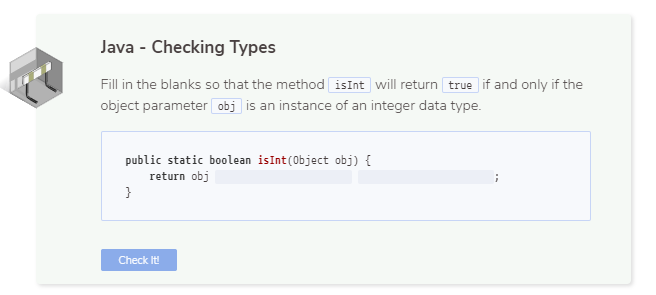
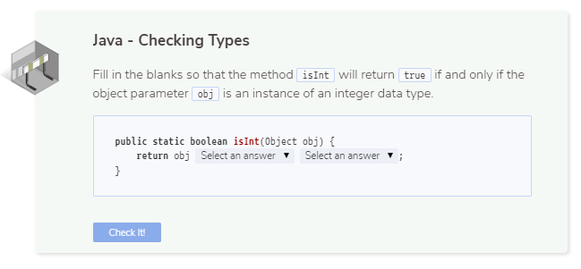
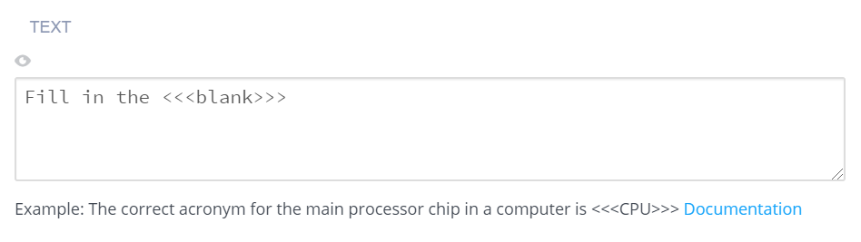
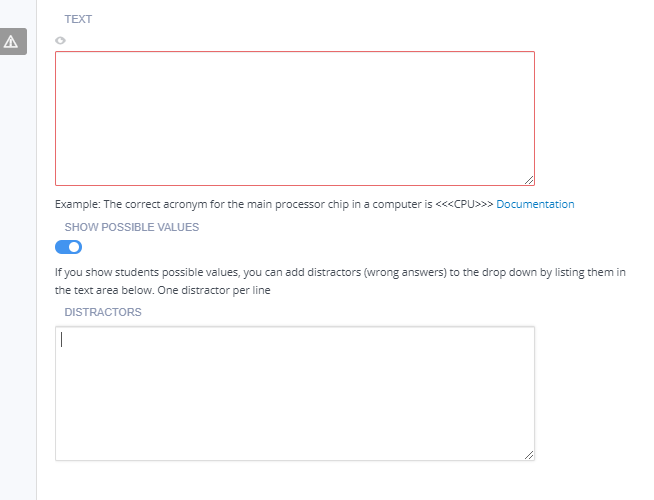
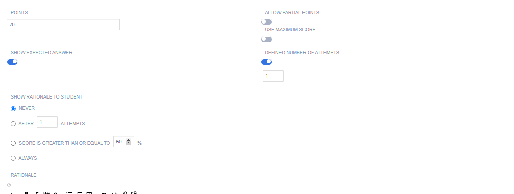

Fill in the Blanks¶
A Fill in the blank question can use either free text or offer options to be chosen from a drop-down list:
Free Text Answers - Shows a question where the student must complete the missing words (fill in the blank) by entering the answers.

Drop-Down Answers - The possible answers are available in a drop-down list where the student chooses the correct answer.

Assessment Auto-Generation¶
Assessments can be auto-generated using the text on the current guides page as context. Follow the steps below to auto-generate a Fill in the Blanks assessment:
Select Fill in the Blanks assessment from Assessments list.
Press the Generate button at bottom right corner.

The Generation Prompt will open, press Generate Using AI to preview the generated assessment.

If you are not satisfied with the result, select Regenerate to create a new version of the assessment. You can provide additional guidance in the Generation Prompt field. For example, create assessment based on the first paragraph with 2 correct answers.
When you are satisfied with the result, press Apply and then Create.
More information about generating assessments may be found on the AI assessment generation page.
Assessment Manual Creation¶
Follow these steps to set up fill in the blank assessments manually:
On the General page, enter the following information:

Name - Enter a short name that describes the test. This name is displayed in the teacher dashboard so the name should reflect the challenge and thereby be clear when reviewing.
Toggle the Show Name setting to hide the name in the challenge text the student sees.
Instruction - Enter the instructions to be shown to the students.
Click Execution in the navigation pane and complete the following information:

Text - Enter the question in markdown, including the correct answer specification. For example:
A prime number (or a prime) is a <<<natural>>> number greater than <<<1>>> that has no positive divisors other than <<<1>>> and <<<itself>>>.
Show Possible Values - Toggle to display possible options for the correct answer:
For text-free questions, blank fields are available for the student to enter the correct answer.
For drop-down questions, all the correct values (anything within the <<< >>> chevrons) are provided in each of the answer positions in a randomized order. You can also add incorrect answers (one per line).

Regular Expression Support
Codio regular expression matching follows the Java language standards.
Examples of regular expressions supported for blank fields:
Answer allows any characters -
<<</./>>>Answer starts with word “begin” -
<<</^begin/>>>Answer ends with word “end” -
<<</end$/>>>Answer can contain one or more spaces in “this is” -
<<</this\s+is/>>>Answer contains 1 or 2 or 3 -
<<</[1 2 3]/>>>Answer allows color or colour -
<<</colou?r/>>>Answer allows yes or “yes” -
<<<"yes", ""yes"">>>Answer allows hat or cat -
<<</[hc]at/>>>Answer allows i==0 or i == 0 -
<<</i ?== ?0/>>>Answer must only contain digits -
<<</^[\d]+$/>>>Answer must only contain non-digits -
<<</^[\D]+$/>>>Answer requires word character -
<<</^[\w]+$/>>>Answer requires non-word character -
<<</^[\W]+$/>>>Answer allows several answers (Place1 or Place2) -
<<<"Place1", "Place2">>>Answer requires case sensitivity -
<<</[A-Z]/>>>or<<</[a-z]/>>>
Click Grading in the navigation pane and complete the following fields:

Points - Enter the score for correctly answering the question. You can choose any positive numeric value. If this is an ungraded assessment, enter zero (0).
Show Expected Answer - Toggle to show the students the expected output when they have submitted an answer for the question. To suppress expected output, disable the setting.
Define Number of Attempts - enable to allow and set the number of attempts students can make for this assessment. If disabled, the student can make unlimited attempts.
Show Rationale to Students - Toggle to display the rationale for the answer, to the student. This guidance information will be shown to students after they have submitted their answer and any time they view the assignment after marking it as completed. You can set when to show this selecting from Never, After x attempts, If score is greater than or equal to a % of the total or Always
Rationale - Enter guidance for the assessment. This is always visible to the teacher when the project is opened in the course or when opening the student’s project.
Use maximum score - Toggle to enable assessment final score to be the highest score attained of all runs.
Click on the Parameters tab if you wish to edit/change Parameterized Assessments (deprecated) using a script. See Parameterized Assessments for more information. New parameterized assessments can no longer be set up.
Click Metadata in the left navigation pane and complete the following fields:

Bloom’s Level - Click the drop-down and choose the level of Bloom’s Taxonomy: https://cft.vanderbilt.edu/guides-sub-pages/blooms-taxonomy/ for the current assessment.
Learning Objectives The objectives are the specific educational goal of the current assessment. Typically, objectives begin with Students Will Be Able To (SWBAT). For example, if an assessment asks the student to predict the output of a recursive code segment, then the Learning Objectives could be SWBAT follow the flow of recursive execution.
Tags - The Content and Programming Language tags are provided and required. To add another tag, click Add Tag and enter the name and values.
Click Files in the left navigation pane and check the check boxes for additional external files to be included with the assessment when adding it to an assessment library. The files are then included in the Additional content list.

Click Create to complete the process.